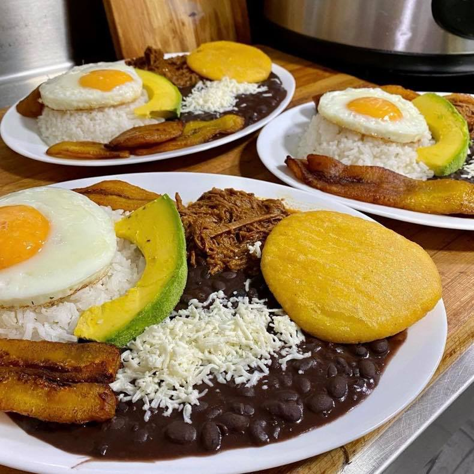

Pabellon

Descripcion
El pabellon, plato tipico de la comida venezolana
Ingredientes
- caraotas negras
- cebollas medianas
- 6 ajies dulces
- 1 cabeza de ajo
- 1/2 cucharadita de pimienta
- 1/2 cucharadita de orenao molido
- tallo de cebollin
- 1 cda de azucar
- 1/2 kg de falda de res
- 1 1/2 taza de arroz
- sal al gusto
- platano maduro
- 1/2 taza de aceite onotado
Preparacion
- Antes de realizar el pabellón criollo, el primer paso es alistar todos los ingredientes.
- En una olla a presión sellar la falda previamente aderezada con sal, pimienta y comino. Cuando esté dorada retirar y agregar la cebolla,
el pimiento, el tomate sin piel y el ajo, todo picado finalmente, cocinar muy bien hasta que esté blando.
- Volver a llevar la carne a la olla, agregar la salsa inglesa, agua o caldo de res hasta que cubra un poco la carne.
Incorpora también la rama de cilantro, un poco más de comino, sal y pimienta. Tapa la olla a presión y cocina durante 1 hora y media.
- Cuando esté lista la carne, con las manos o con un tenedor deshebra y lleva a la olla de nuevo para que absorba más el sabor del resto de ingredientes.
Reservar hasta el momento de servir.
- Para las caraotas, desde la noche anterior déjalas en remojo, al momento de prepararlas agrega abundante agua en una olla a presión,
añade las caraotas con un poco de cebolla y sal, y deja cocinar durante 1 hora y media.
- En una sartén aparte con aceite a temperatura media, fríe las tajadas de plátano hasta que estén doradas.
- Finalmente, sirve el pabellón criollo venezolano con las caraotas negras, la carne mechada, el arroz blanco y las tajadas de plátano.
Si te ha gustado esta receta, tienes algún comentario o inquietud, danos tu opinión.